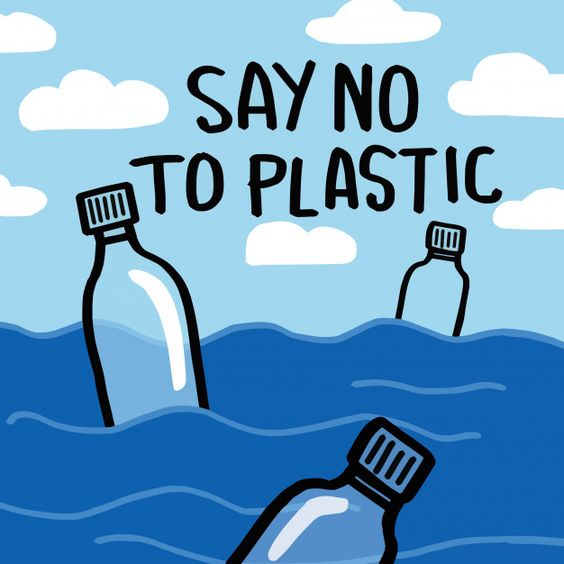
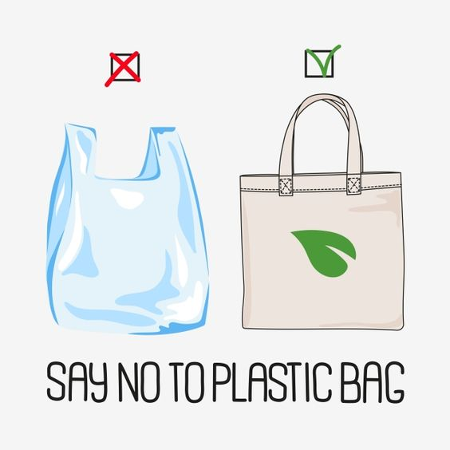
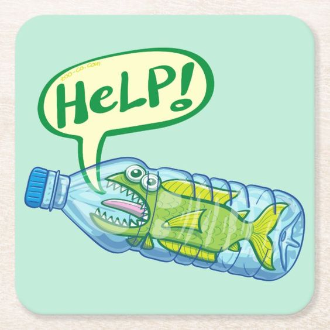
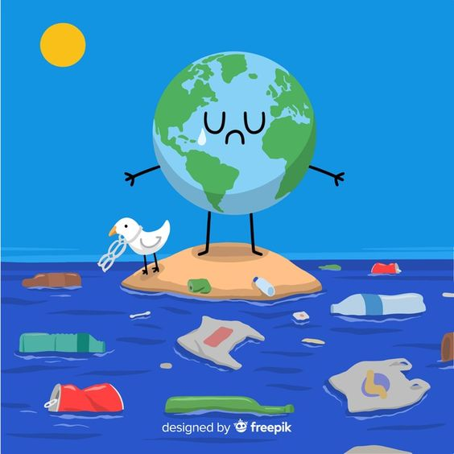

¿Qué son los plásticos?
"Plástico" es el término habitual para describir una amplia gama de materiales sintéticos o semisintéticos que se utilizan para una inmensa cantidad de aplicaciones.
Tipos de plásticos y características
TABLAAA
Modo en el que se degradan los plásticos
- Si el PET se tira al medio ambiente su efecto dura largo tiempo.
- Según cálculos, puede tardar entre 500 y 1.000 años en descomponerse.
- Y aunque deje de verse habrá liberado miles de fragmentos de micro plástico.
- El LDPE Es fundamental tratarlo adecuadamente, devolviéndolos al ciclo de reciclado o al de residuos.
- Si se arrojan a la naturaleza pueden tardar hasta 150 años en descomponerse.
- Se desharía en pequeñas piezas de micro plástico.
Alternativas para dejar de usar plásticos
- Di NO a las pajitas. Una de las maneras más fáciles de reducir el consumo de plástico es no usando pajitas en las bebidas.
- Utiliza bolsas reciclables.
- Compra cajas, no botellas.
- Compra alimentos a granel.
- Reutiliza envases de vidrio.
- Usa botellas y vasos reutilizables.
Puedes encontar más información en esta página.
